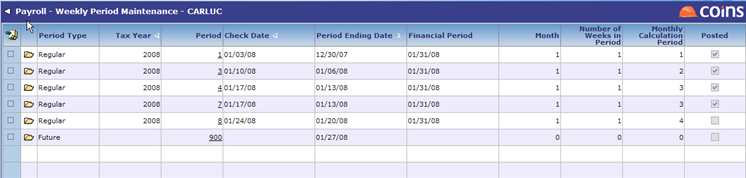

| ***NOTE: THIS IS A US SPECIFIC TOPIC.*** |
You can update or change the Period End Date,
The Payroll Periods are grouped and reserved as follows:
Details on each of these Payroll Periods are described below.
Timesheets and Periods
Regular Periods are used to represent the standard payroll cycle. Generally, there are 52 regular periods for Weekly, 26 regular periods for 2-Weekly, etc.
Regular Timesheets can be Computer, Manual, Adjusting, or
Adjusting Periods
Adjusting Periods are used to make corrections and adjustments to a previously posted payroll or to process an interim payroll -- one not related to any payroll cycle. You may reuse a prior period's information when creating an Adjusting Period in Period Maintenance.
This functionality allows you to run a 2nd or 3rd payroll using the same criteria as the original payroll run to enter missed time, layoffs, or other adjustments. Processing is the same as Regular periods. Regular and Adjusting Periods can be combined for reports such as Certified Payroll, Union Reports, or Tax Reports. There is no need to generate two separate reports and aggregate totals.
Future Periods and Timesheets
You have the option to use Future Periods when processing payroll. Future Periods allow for the entry of Computer, Adjusting,
A Future Period is assigned a Period End Date. When a Regular or Adjusting Period is started using that date, any timesheets in the Future Period are made current and available for processing. This is very useful for any user who may wish to process proactively, such as entering timesheets daily, making adjustments for Retroactive Pay to be processed at a later date, or entering Bonus Payments while not interrupting regular payroll processing.
You can open as many concurrent Future Periods as necessary. For example, let's assume we are currently processing for Regular Weekly Period 8, Week Ending 1/20/08. This payroll was calculated and

The recommended procedure is to leave the Future Period open until you are ready to calculate it. This gives you the flexibility to process other Adjusting Payrolls while preparing the next Regular Period's transactions.